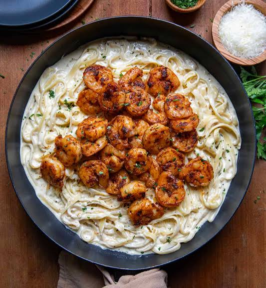

Return to Main Menu
Shrimp Alfredo

About This Dish
A comforting pasta dish featuring a rich, creamy parmesan sauce and seasoned shrimp.
Gather These Items
- 1 lb fettuccine pasta
- 1 lb raw shrimp
- 2 cups heavy whipping cream
- 1 cup parmesan cheese
Cooking Instructions
- Boil the pasta in salted water.
- Sauté the shrimp in a skillet until they turn pink.
- Add the cream and cheese to the skillet and simmer.
- Mix the pasta into the sauce and serve.